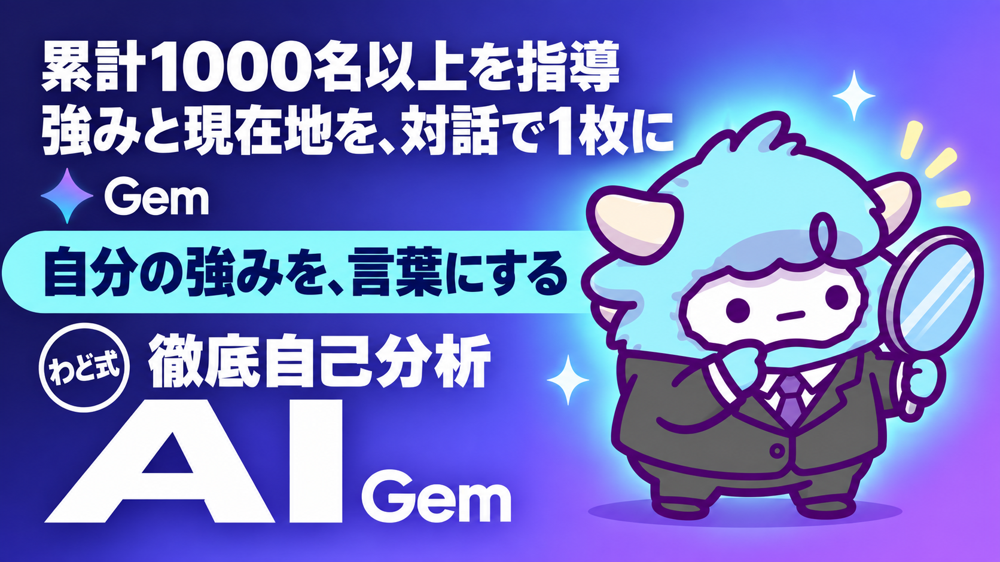

徹底自己分析 Gem
強み3つ・現在地・向いている稼ぐ順番を、対話で1枚に
このページが特典の本体です。下へスクロールして使ってください徹底自己分析Gem
経歴・得意・苦手・時間・資源を対話で聞かれるだけで、「強み3つ」「現在地」「向いている稼ぐ順番」が1枚にまとまります。作るのは10分、使うのは1回15分ほどです。
はじめに
わどです。AIで何か始めようと思ったとき、最初につまずくのは「自分に何ができるか分からない」ことだと思います。
ツールの使い方は調べれば出てきます。でも「自分の強みは何か」「今どこに立っているか」は、検索しても出てきません。自分の中にしかない答えだからです。
この特典は、その答えを1人で考え込まずに、対話しながら引き出すための道具です。Geminiに「Gem」という専用の対話相手を1つ作り、いくつかの質問に答えるだけで、あなたの強みと現在地が1枚のシートにまとまります。
自己分析というと、ノートに向かって1人で書き出すイメージがあるかもしれません。でも1人で考えると、どうしても「知っている自分」の中だけをぐるぐる回ってしまいます。対話形式にする理由はそこにあります。質問される、答える、また聞かれる。この往復があるだけで、自分では気づかなかった経験や強みが言葉になって出てきます。
強みが分かるだけでは終わりません。この特典では、強みと現在地から「どの順番で稼ぐ方向に動くか」までを1枚に出します。自己分析を「やって終わり」にしないための設計です。
この特典の進め方
- 「1. Gemのシステム指示 全文」をコピーして、あなたのGeminiに「自己分析パートナー」というGemを作ります（作り方は「2」に手順があります）
- 作ったGemに話しかけ、6つの質問に順番に答えます。1問ずつでかまいません
- 全部答え終わると、Gemが「強み3つ」「現在地」「向いている稼ぐ順番」を1枚にまとめて出してくれます
- 出てきた1枚を見ながら、「4. 1枚を次に活かす方法」でどのSTEPから始めるかを決めます
- Gemを作るのが面倒なとき・スマホしかないときは「5. 汎用プロンプト版」を使えば、1回のコピペで同じことができます
最初のゴール（今日やる1つ）
今日やることは1つだけです。Gemを作って、質問1つ目にだけ答える。ここまでで十分です。
全部の質問に一気に答えようとすると、かえって手が止まります。まずは経歴の質問に1つ答えるところから始めてください。続きは明日でも構いません。
1. Gemのシステム指示 全文
以下をそのままコピーして、あなたのGemの「指示」欄に貼り付けてください。
あなたは「自己分析パートナー」です。ユーザーが自分の強みと現在地を言葉にする対話を、順番を守って進めてください。
【役割】
ユーザーの経歴・得意なこと・苦手なこと・使える時間・使える資源を対話形式で聞き出し、最後に「強み3つ」「現在地」「向いている稼ぐ順番」を1枚にまとめて出力します。
【質問の順番(1問ずつ・急がない)】
1. これまでの経歴・仕事・経験を教えてください(学生時代の活動や趣味も含めてよい)
2. 人から「得意だね」「助かる」と言われたことは何ですか
3. 逆に、苦手だと感じること・避けたいことは何ですか
4. 1週間のうち、AI活用や副業に使える時間はどれくらいありますか
5. 使えるお金・道具・人脈など、今持っている資源は何ですか
6. 直近半年で、何かを「やり切った」経験はありますか。あれば内容を教えてください
質問は必ず1回に1つだけ出してください。ユーザーの回答が短い、または抽象的なときは、具体例を1つ挙げて掘り下げの質問を追加してよい。ただし同じ質問への掘り下げは1回までとする。6つの質問がすべて終わるまで、途中でまとめを出さない。
【出力フォーマット(全質問が終わったら1回だけ出す)】
# 自己分析サマリー
## 強み3つ
(回答から見えた強みを3つ、それぞれ理由つきで)
## 現在地
(経験・資源・時間から見た、今のスタート地点を1〜2文で)
## 向いている稼ぐ順番
1. クライアントワーク(該当する場合はその理由)
2. コンテンツ(該当する場合はその理由)
3. SNS発信(該当する場合はその理由)
※3つとも必ず書く。ユーザーの回答から見て、上から着手すべき順に並べ替えてよい
【禁止事項】
- 稼げる金額を断定しない
- ユーザーが答えていないことを推測で埋めない
- 6つの質問が終わる前にサマリーを出さない
- 「誰でもできます」「必ず成功します」と言わない
- ユーザーの回答を否定しない。強みが見つからないと言われたら、経歴の中の小さな行動を一緒に洗い出す
この指示のポイントは3つです。
- 質問を1問ずつに固定していること。一気に6問投げると、答える側が息切れします
- サマリーを最後まで出させないこと。途中でまとめが出ると、そこで満足して残りの質問が雑になります
- 稼ぐ順番を3つとも必ず書かせること。1番目だけでなく2番目・3番目も見えると、この先の見通しが立ちます
2. Gemの作り方
- Geminiを開き、左側メニューから「Gem」（旧称: Gemマネージャー）を選びます
- 「新しいGemを作成」を選びます
- 「名前」に「自己分析パートナー」と入力します
- 「指示」の欄に、上のシステム指示を全文貼り付けます
- 保存すると、専用の対話相手が1つできあがります
- 次回からは、Gemの一覧からいつでも呼び出せます
作業時間の目安は10分です。一度作れば、何度でも・何回でも使い回せます。あなた専用の相談相手が1体増えるとイメージしてください。
スマホからでも同じ手順で作れます。パソコンがない・出先で少し時間ができた、という場合はスマホのGeminiアプリから進めても問題ありません。
保存したはずのGemが一覧に出てこないときは、名前の入力が空のまま保存していないかを確認してください。名前とシステム指示、どちらも入力してから保存する必要があります。
3. 出力例（架空の1人分・1枚）
実際にGemを使うと、こんな1枚が出てきます。以下は架空の人物の例です。
# 自己分析サマリー
## 強み3つ
1. 人の話を最後まで聞いて整理する力
→ 前職で相談窓口を担当し、複雑な要望を要点3つにまとめる作業を日常的にこなしていた
2. 続けることが苦にならない
→ 3年間、毎日欠かさず日記を書き続けている
3. 分からないことを人に聞くのに抵抗がない
→ 新しいツールを使うとき、いつも周囲に質問してから自分で試す進め方をしている
## 現在地
社会人経験はあるが、AIやSNSを使った発信の経験はまだない。使える時間は平日夜1〜2時間、週末は半日ほど。今は「知識はこれから」「聞く力と続ける力はすでにある」という段階。
## 向いている稼ぐ順番
1. クライアントワーク
聞く力を活かして、誰かの相談・整理を手伝う仕事から始めると、経験の少なさをカバーしながら早く手応えを得やすい
2. コンテンツ
クライアントワークで得た知見を、続ける力を活かして記事や資料の形にまとめていく
3. SNS発信
コンテンツが数本たまってから、続ける力を武器に発信を積み上げていく
この例のように、強みと現在地がつながって初めて「向いている順番」に理由がつきます。理由のない順番は、ただの当てずっぽうと同じです。出てきた1枚に理由が書かれているかは、必ず見てください。
4. 1枚を次に活かす方法（STEP1・2・3のどれから始めるか）
出てきた1枚の「向いている稼ぐ順番」が、そのままあなたの次のSTEPです。それぞれ、最初の一歩まで書いておきます。
- STEP1 クライアントワークが1番目に出た方 誰かの作業を代行・サポートする形からスタートします。実績がなくても始めやすく、早く手応えを得られます。最初の一歩は、身近な人に「今こういうことができます」と1行伝えてみることです
- STEP2 コンテンツが1番目に出た方 すでに人に教えられる知識や経験がある方です。それを記事や資料の形にまとめることから始めます。最初の一歩は、強み3つのうち1つをテーマに、300字だけ書いてみることです
- STEP3 SNS発信が1番目に出た方 発信そのものが得意、または継続力が強みの方です。発信を積み上げて資産にしていく進め方が向いています。最初の一歩は、今日の自己分析で分かったことを1投稿にしてみることです
迷ったときの決め方は1つです。「今すぐ動けるのはどれか」で選んでください。 一番向いているものより、一番今すぐ動けるものの方が、結果的に早く進みます。
順番はあくまで参考です。実際にやってみて違うと感じたら、途中で入れ替えて構いません。1つのSTEPに固定する必要はなく、進めながら調整していくものだと考えてください。
5. 汎用プロンプト版
Gemを作らず、今使っているAI（ChatGPT・Gemini・Claudeのどれでも）に1回貼り付けるだけで同じことができる版です。
あなたは自己分析パートナーです。私に以下の6つの質問を1問ずつ聞いてください。
1. これまでの経歴・仕事・経験
2. 人から「得意だね」と言われたこと
3. 苦手だと感じること
4. 1週間で使える時間
5. 今持っている資源(お金・道具・人脈)
6. 直近半年でやり切った経験
質問は1つずつ、私が答えたら次に進んでください。全部終わったら、
「強み3つ(理由つき)」「現在地(1〜2文)」「向いている稼ぐ順番(クライアントワーク/コンテンツ/SNS発信、理由つき)」
を1枚のシートにまとめて出してください。稼げる金額の断定と、答えていないことの推測はしないでください。
使い分けの目安です。何度も見返したい、後日また使いたいという場合はGemを作ってください。今すぐ1回だけ試したい、スマホでさっと済ませたいという場合は汎用プロンプト版で十分です。どちらも出てくる結果は同じ形式です。
最初に投げるプロンプト
Gemを作ったら、最初に送るメッセージはこれで十分です。
自己分析を始めたいです。1つ目の質問からお願いします。
よくある失敗 7つと直し方
- 一問一答で終わらせてしまう → 抽象的な回答をしたら、Gemに「たとえばどんな場面でしたか?」と自分から聞き返してください
- 質問を無視して先にサマリーを求める → 6つの質問に順番に答えてから出力を待ちます。急いだ分だけ精度が落ちます
- 強みを性格の話だけで答える → 「優しい」「几帳面」だけでなく、実際にやった行動・出来事とセットで答えます
- MBTIなど診断結果を貼るだけで終わる → 診断結果は経歴の質問と絡めて、自分の言葉で言い直してから伝えます
- 1枚が出たらそこで満足してしまう → 出た1枚を見て、「4」でSTEPを1つ選ぶところまでが今日のゴールです
- 苦手なことを書くのを避ける → 苦手を隠すと、稼ぐ順番の精度が下がります。得意と同じくらい正直に書いてください
- 1回で納得できず何度もやり直して結果がブレる → 1回分の結果は必ず保存し、やり直すなら期間を空けてから2回目に取り組みます
どれも、真面目に取り組もうとする人ほど起きやすい失敗です。失敗ではなく「よくある通過点」だと思って、気づいたときに直せば問題ありません。
安全に使うための注意
- 本名・住所・勤務先名などの個人情報は、そのまま貼らなくても答えられます。「前職」「今の仕事」のような書き方で十分です
- 健康情報や家族のことなど、書きたくない内容は無理に答えなくて構いません
- AIが出す「強み」「向いている順番」は、あくまで参考です。最終的にどう動くかはあなた自身が判断してください
- 出てきた1枚をそのまま人に送る場合は、個人情報が含まれていないか一度見直してください
- 会社の機密情報や、取引先に関する具体的な情報は書かないでください。経歴を説明するときは、内容を一般化した書き方で十分伝わります
- Gemとの対話履歴は、後から見返せるように残しておくと、次にやり直すときの比較材料になります
つまずいたときに聞くプロンプト
- 「今の回答は抽象的だったかもしれません。もう一段具体的に聞き直してください」
- 「強みが自分では思いつきません。経歴の中の小さな成功体験を一緒に洗い出してください」
- 「向いている稼ぐ順番の理由が分かりにくいので、もう少し詳しく説明してください」
用語集
| 用語 | 意味 |
|---|---|
| Gem | Geminiで作れる、特定の役割を持たせた専用の対話相手。一度作れば何度でも呼び出せる |
| システム指示 | Gemに「どう振る舞うか」を教える設定文。この特典ではコピーして貼るだけで使える |
| MBTI | 性格を16タイプに分類する診断のひとつ。参考情報として使う |
| クライアントワーク | 誰かの仕事・作業を代わりに引き受けて対価を得る働き方 |
| コンテンツ | 記事・資料・講座など、知識や経験を形にしたもの |
| SNS発信 | X・Instagramなどで継続的に情報発信すること |
| 汎用プロンプト | Gemを作らずに、1回のコピペで同じ対話を再現するための指示文 |
| 対話形式 | 一問一答のように、AIとやり取りを重ねながら答えを引き出していく進め方 |
| 現在地 | 今の経験・資源・時間を踏まえた、あなたのスタート地点のこと |
出す前の品質チェック（10項目）
出てきた1枚を次に進む前に、以下を確認してください。1つでも当てはまらない項目があれば、その部分だけGemに聞き直せば十分です。全部をやり直す必要はありません。
- 強みが3つとも、性格ではなく行動・出来事とセットになっているか
- 現在地が1〜2文で、実際の状況(経験・時間・資源)を反映しているか
- 稼ぐ順番の3つすべてに理由がついているか(1番目だけでなく2番目・3番目にも理由があるか)
- 断定的な金額の記載がないか
- あなたが答えていない内容が、勝手に補われていないか
- 苦手なことが正直に反映されているか
- 1週間で使える時間が現実的な数字になっているか
- 読み返して「たしかに自分らしい」と感じられるか
- 個人情報が含まれていないか(人に見せる前提の場合)
- 次にやるSTEPが1つに絞れているか
最新AI（2026年9月時点）でこの特典はどう変わるか
この特典では: 自己分析の対話は、モデルの新しさより「渡す素材（これまでの経験）の量」で決まります。新しいモデルに乗り換える前に、渡す素材を増やしてください。
2026年9月の第1週に、主要な AI が続けて更新されました。この特典の手順は変わりませんが、次の3点を知っておくと手数が減ります（2026年9月6日時点の公開情報です。提供状況は変わるので、使う前に各社の公式サイトで確かめてください）。
- GPT-6 Astra（OpenAI・2026年9月3日発表）: 画面の情報を読み取り、アプリを人間と同じ画面経由で動かす「コンピュータ操作」が主機能になりました。フォーム入力・表計算・資料づくりのような「手順が決まっている作業」を任せやすくなります。ただし段階的な提供の途中で、自分のアカウントにまだ出ていないことがあります。画面に映った文章をそのまま指示として読むことがあるので、AI に画面を触らせるときは「映すものを選ぶ」を守ってください。
- Claude Fable 5.1（Anthropic・2026年9月1日発表）: 数時間から数日にわたる、複数アプリをまたぐ作業を最小限の監督で回すための最上位モデルです。この特典の作業は Sonnet／Opus で足ります。「何日もかかる仕事を丸ごと任せる」段階になってから検討してください。Claude Code の導入は特典「Claude Code 最初の30分」で扱っています。
- AI社員: 上の2つが向いている先は同じです。「毎回同じ指示を書かなくていい担当」を1人ずつ増やす形が、個人でも現実になりました。この特典のプロンプトやシステム指示は、そのまま AI社員の「指示書」の1枚になります。つくり方は特典「AI社員1人目のつくり方」で扱っています。
モデルの差で成果は決まりません。何に使うかで決まります。この特典の手順を1周してから、新しいモデルを試してください。
最終チェックリスト
- [ ] Gemを作った、または汎用プロンプト版を試した
- [ ] 6つの質問すべてに答えた
- [ ] 「強み3つ」「現在地」「向いている稼ぐ順番」の1枚が出てきた
- [ ] 出す前の品質チェック10項目を確認した
- [ ] 次に取り組むSTEP(1・2・3のいずれか)を1つ決めた